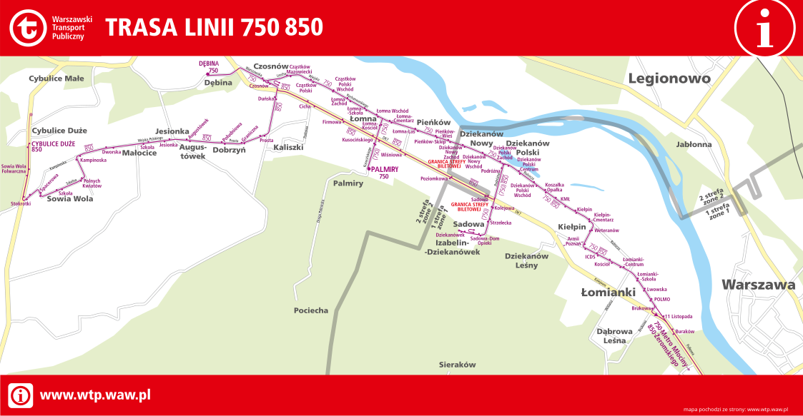

KOMUNIKACJA MIEJSKA W WARSZAWIE
STRONA GŁÓWNA
TRASY LINII
BRYGADY
ROZDKŁAD JAZDY
MAPY I SCHEMATY
SCHEMATY LINII TRAMWAJOWYCH
KM W-WA
Schemat komunikacji szynowej
Zamknięcie ulicy Saskiej i Egipskiej
Budowa trasy tramwajowej do Wilanowa
Schematy linii strefowych
Schemat komunikacji dziennej strefowej + 511

Schemat komunikacji dziennej strefowej w gminie Łomianki i Czosnów